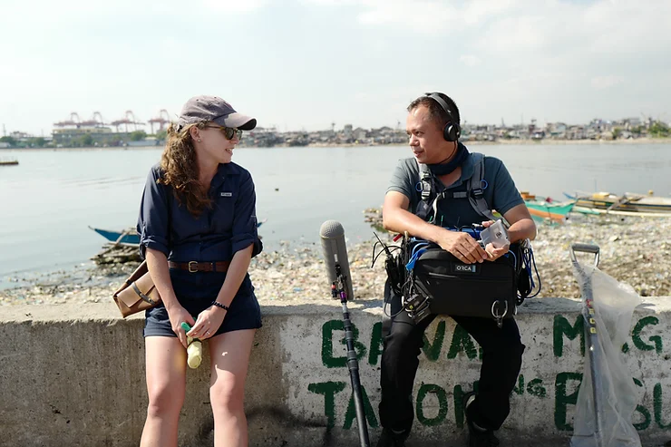
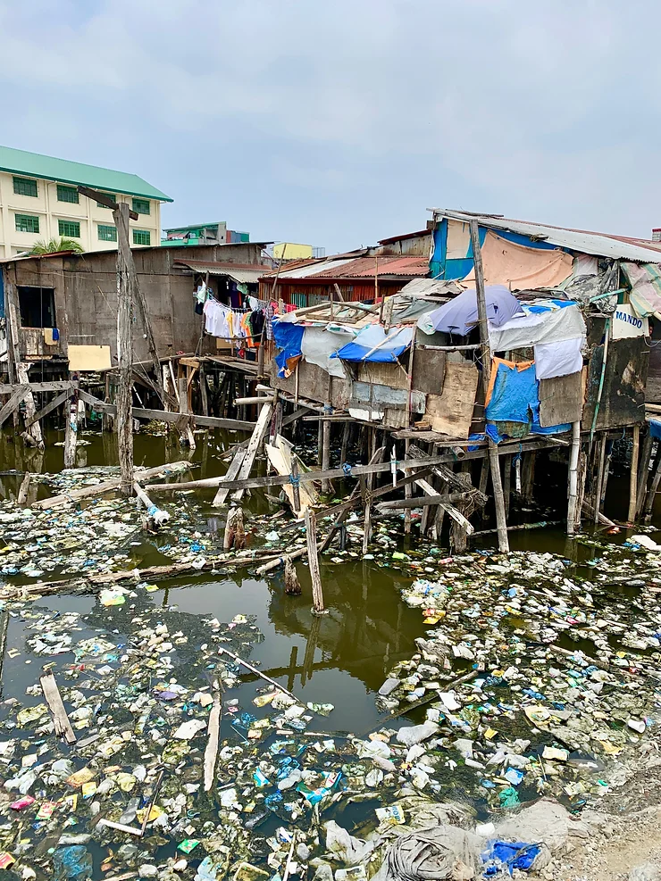
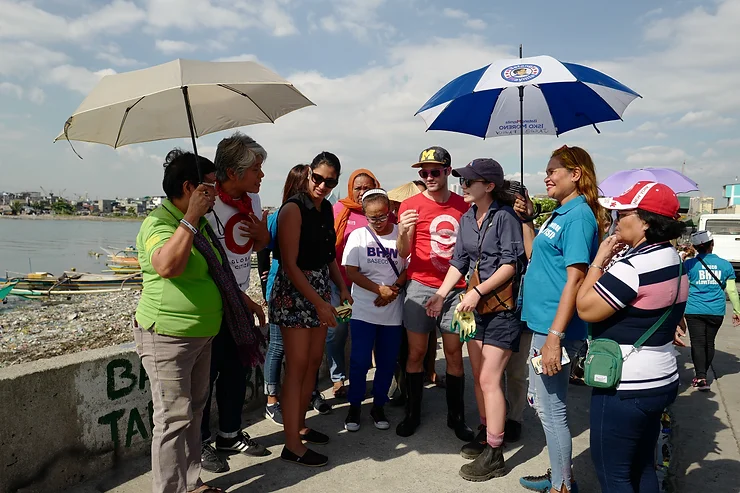
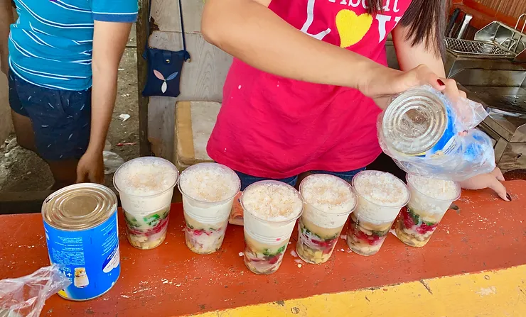
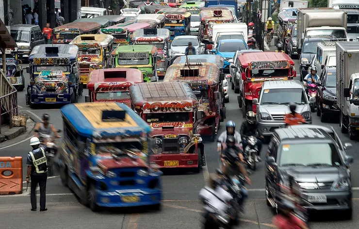
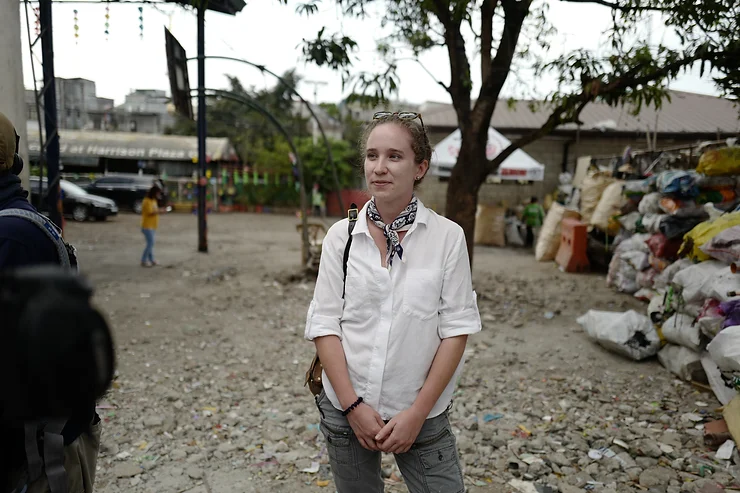
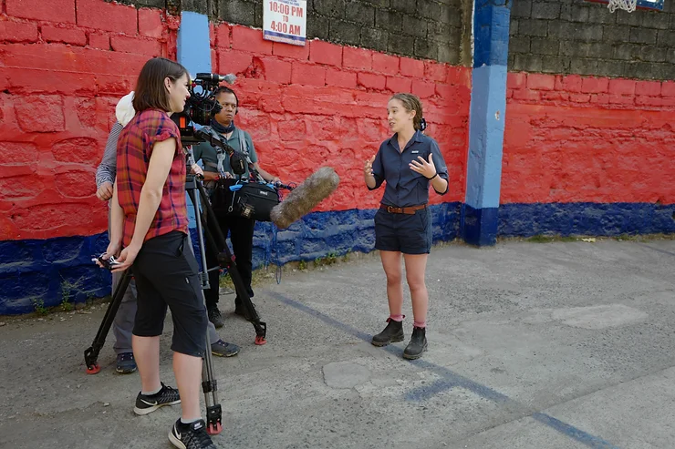
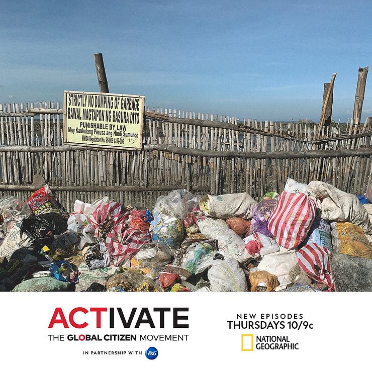

Metro-Manila, likely not the top of your travel bucket list, the bustling sprawling South-East Asian capital of the Philippines. Home to somewhere between 12 - 20 million people, one of the world’s most densely populated city. When I accepted the job of helping create a National Geographic tv episode about mismanaged waste and ocean plastic pollution in the Philippines I had no idea what I was getting myself into…
The episode description goes something like, “In the episode, Pharrell Williams joins Global Citizen’s push to get governments, companies and individuals to solve the ocean plastic pollution crisis. Meanwhile, Darren Criss travels to the Philippines to witness how plastic waste impacts people living in extreme poverty and calls on global citizens to urge their mayors to commit their cities to zero-waste futures. Experts describe the disproportionate impact of plastic pollution on people in developing countries and the ways people and brands are solving the problem around the world.”
But there is more to the episode than you will see on the National Geographic Channel, here are some non-essential musings and behind the scenes look at my time in metro-Manila helping make a Nat Geo tv episode.
 Philippines holds the record for the deadliest place for environmentalist and journalist - good thing I was there as an environmental consultant creating a show with National Geographic. In an average week in 2018, three people were killed while defending their land and the environment. Countless more people have been silenced through other tactics designed to crush the opposition, including arrests, death threats, lawsuits and smear campaigns. Despite the increased focus on environmental issues the world over, the proliferation of strongmen leaders is bringing greater danger for those trying to defend the environment.
Darren Criss is an absolute sport. The Glee star used his stardom to help move the dial on waste and pollution in his mother’s homeland. Wether we asked him to sort trash at a recycling facility or join waste collectors to pick up dirty diapers, he obliged with a smile and usually broke out into song.
Halo Halo Dessert - This choose-your-own adventure dessert literally translates to "mix mix," because that's what you're supposed to do with the chilly layering of shaved ice, evaporated milk and toppings. The toppings seem wildly incongruous, an icy sweet technicolor concoction of beans, candied fruit and jello. I really do not know what half the ingredients are, it's texturally bizarre and strangely, damn delicious. Keep in mind, every halo halo is a bit different, one chef’s toasted rice and gelatin cubes is another’s Cap’n Crunch and melon-flavored tapioca pearls…. The quick-melting nature of the dish dictates it must be consumed quickly, meaning it's often chased by a healthy brain freeze.
Malls are a big deal. Like a really big deal. These shiny clean and new metropolises stand in stark contrast, (both in appearance and smell) from much of the rest of Manila; an urban environment considerably heavier on rusting corrugated steel, scruffy wandering animals, and visible diesel fumes. The malls are usually staffed with a ludicrous abundance of security guards both inside and out. And most importantly, they offer air conditioning, which goes a long way to explaining their success in a city whose temperature seldom falls below 21°C.
The Jeepney - Originally conversions of the American jeeps left behind after WWII but now built locally, these elongated vehicles, decked out with a pair of bench seats and a captivating variety of eye-catching color schemes and religious, nationalistic or simply cartoonish murals, represent the Philippines’ distinctive brand of improvisational urbanism. As a Landcruiser lover, I was oddly captivated by these.
Beyond the beachy resort towns, democracy is fragile, and life is tough. Given the prevailing security context, and my penchant for speaking with strapping men in uniform, our security details (who also protected Anthony Bourdain when he was in Manila!) taught me to fight. The Filipino national martial art Kali aka Philippines version of MMA meets a knife fight is one of the most brutal, remorseless defense systems going. It was developed to deal with the harsh realities and a very bloody colonial and invasion history.
 That is all I can share for now, but tune in and watch Activate: Ocean Plastic Pollution Thursday October 3rd on the National Geographic Channel at 10pm EST or on Global Citizen.org/activate for the full story!
